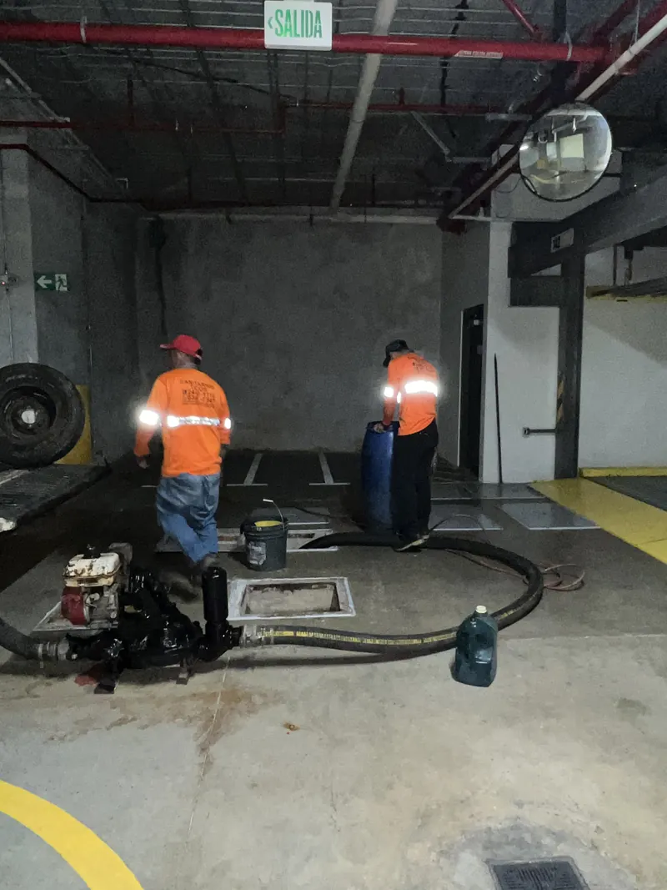

Su tanque séptico, atendido hoy mismo.
Atendemos emergencias el mismo día. Limpieza de tanques sépticos, destaqueo de tuberías y manejo de aguas residuales con equipo propio. Tres sedes en el Valle Central y servicio en todo el país.

Cinco servicios, una sola llamada
Todo lo que puede fallar en el sistema de aguas de una casa o un negocio.

Limpieza de tanques sépticos
Extracción completa con camión cisterna y sistema de succión, sin derrames ni malos olores.
Limpieza y destaqueo de tuberías
Sonda eléctrica profesional para cualquier diámetro, desde un lavatorio hasta el colector principal.

Trampas de grasa y diesel
Mantenimiento para restaurantes, sodas, comedores industriales, talleres y estaciones.

Construcción de tanques, drenajes y plantas
Tanque séptico nuevo, drenaje de aguas o planta de tratamiento, según lo que el terreno permita.

Alquiler de tanques plásticos
Recolección de aguas residuales en obras y eventos, con entrega y limpiezas programadas.
No subcontratamos. El que cotiza es el que llega.
En este oficio abundan los intermediarios: uno cotiza, otro llega y nadie responde después. Grupo Ticos Sanitarios S.A. trabaja al revés — equipo propio, personal capacitado y tres sedes para llegar rápido cuando el problema no da espera.
- Equipo propioDos camiones cisterna con sistema de succión y varios tipos de sonda eléctrica.
- Precio antes de salirLe cotizamos primero. Sin cargos que aparecen cuando el trabajo ya está hecho.
- Disposición responsableLas aguas se transportan en la cisterna. Nunca se descargan en su propiedad ni en cauces cercanos.
De una casa de familia a una planta industrial
El sistema de aguas es el mismo problema a distinta escala. Atendemos por igual una emergencia de fin de semana en una casa y un programa de limpieza calendarizada para un negocio con mucho movimiento.
- Residencias
- Condominios
- Restaurantes y sodas
- Hoteles
- Escuelas y colegios
- Talleres y estaciones
- Industrias
- Proyectos de construcción
- Fincas
Tres sedes en el Valle Central.
Servicio en todo el país.
Las sedes están donde está la mayor demanda, para llegar rápido a una emergencia. Pero el camión sale a donde haga falta: Guanacaste, Puntarenas, Limón, la Zona Sur o la Zona Norte.
- Valle CentralDesde las sedes de Alajuela, Heredia y San José, con sus cantones vecinos.
- Resto del paísGuanacaste, Puntarenas, Limón, Cartago, Zona Norte y Zona Sur, bajo coordinación.
Dígannos qué está pasando y le cotizamos hoy mismo
Una llamada o un mensaje con una foto bastan para orientarle. La cotización no tiene costo y el precio se lo damos antes de salir.
Sedes en Alajuela, Heredia y San José. Servicio en todo el país, coordinando la visita según la ruta.